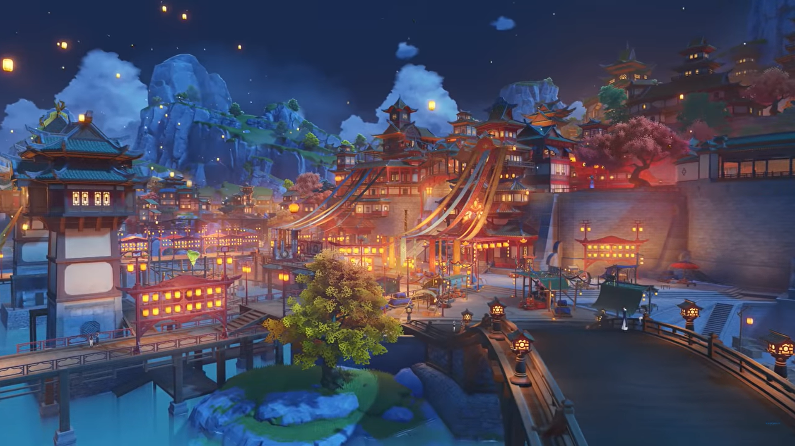

Описание
Ли Юэ - крупнейший торговый регион Тейвата, связанный с элементом Гео. Здесь всё строится на контрактах, а покровитель - Моракс, он же Чжун Ли.
Ключевые факты
- Элемент: Гео (земля)
- Архонт: Моракс (Чжун Ли)
- Основная фракция: Цисин
- Известные персонажи: Сяо, Ху Тао, Нин Гуан, Кэ Цин
Вернуться к списку регионов.